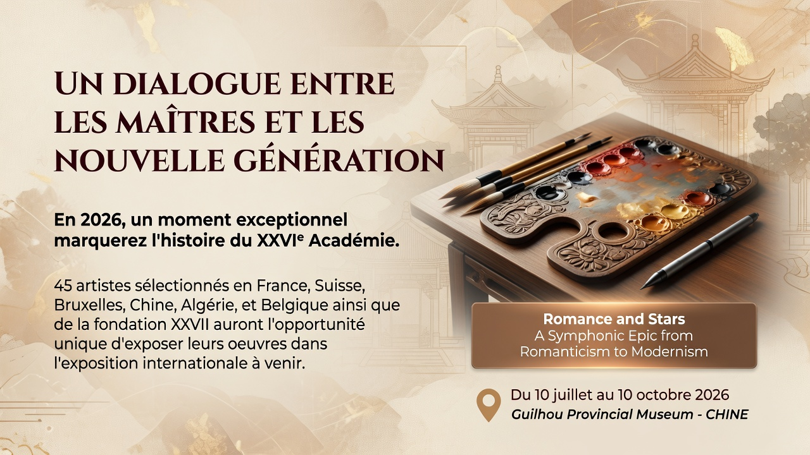
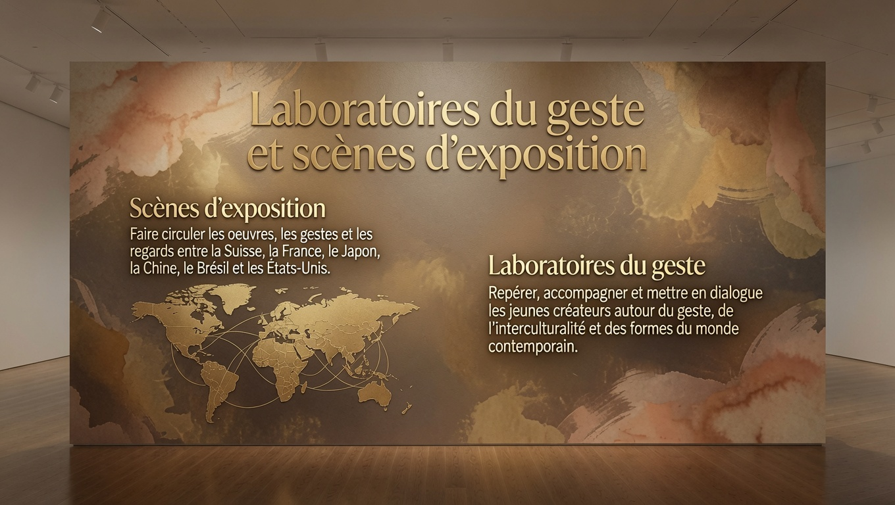

Créer un face-à-face fertile entre maîtres, enfants et jeunes talents, où chaque regard élève l’autre.
Exposition internationale 2026
Un dialogue entre les maîtres et la nouvelle génération
La brique exposition devient l’ouverture magistrale de la Fondation : enfants, jeunes talents et artistes confirmés exposés avec la même dignité, dans un parcours de transmission, de reconnaissance et de rayonnement international.




Installer les artistes émergents au niveau d’exigence et de visibilité des artistes professionnels.
Faire de l’exposition le point d’entrée naturel vers la galerie, le mécénat et les partenariats internationaux.